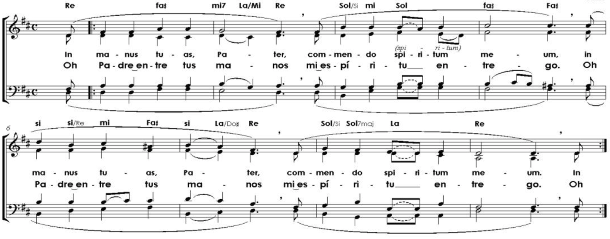

Tiempo de Cuaresma (Viernes Santo)
Cejillo 1er espacio
LA DO#m SIm LA
Oh Padre, entre tus manos
SIm RE DO#
mi espíritu entrego;
FA#m DO# FA#m MI LA
oh Padre, entre tus ma-------nos
RE MI LA
mi espíritu entrego.
Tonalidad original: RE
